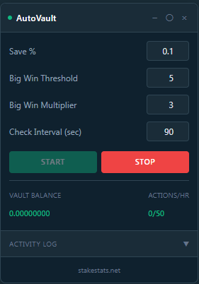
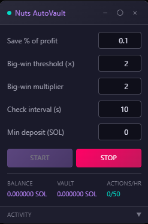

Auto-Vault
Watches your balance and sweeps a configurable percentage of profits into the vault on every check. Rate-limited, currency-aware, with optional big-win multipliers that lock in more when a spike happens.
Original Stake autovaulter by Ruby of StakeStats. The Shuffle and Nuts adaptations are ports of that core engine.
Set a Save % (the cut of profit to send to the vault) and hit Start. The script polls your balance at your chosen Check Interval, calculates session profit, and pushes the % to the vault via the site's own GraphQL endpoint — same call the in-game Vault button makes, just automated.
When a single round pays at or above the Big-Win Threshold (e.g. 5×), it bumps that one transfer by the Big-Win Multiplier (e.g. 3×) so a 100× spike actually locks meaningful gains away instead of vaulting the same percentage as a 2×.
Screenshots


Controls
Every field on the floating panel, what it does, and the default.
- Save %Percentage of session profit pushed to the vault each cycle. Default 10%.
- Big-Win Threshold (×)Multiplier at which a round counts as a "big win." Default 5×.
- Big-Win MultiplierWhen a round meets the threshold, vault this many times the base Save % on that profit. Default 3×.
- Check Interval (sec)How often the script polls your balance and considers vaulting. Default 90 s.
- Min DepositSkip vault calls below this size to avoid dust transfers.
- View modeFull panel, Mini (dot only), or Stealth (8-px bottom-right dot).
- Start / StopToggle monitoring. Settings persist between sessions.
Live stats
Vault Balance
Running total vaulted this session, per active currency. Reset on page reload.
Actions / hour
Tracks the 50-action wall-clock rate limit so you can see how close you are.
Activity log
Color-coded scroll of vault events — success, warnings, profit milestones, big-win bumps.
Engineering notes
- Rate limitingCapped at 50 vault actions per hour (wall-clock, not per session) so it never looks spammy to the site.
- Currency awareReads the active currency from the UI; tracks vaulted amounts independently per currency in sessionStorage.
- Idle awareWon't fire during reconnects; requires two confirmed balance reads before transferring.
- Per-site settingsStake, Shuffle, and Nuts each have their own
autovault-config— your tuning on one site never leaks to another. - Stake APIUses the site's own GraphQL
CreateVaultDepositmutation. Same transport the Vault button uses. - Nuts (Solana)SOL-denominated; internal math in lamports (1 SOL = 1,000,000,000). Vault deposits go through SPL token mechanics.
- ShuffleShuffle has no programmatic vault API — Auto-Vault on Shuffle is balance/session tracking with a one-click access to the vault dialog.
Install Auto-Vault
It ships in the unified bundle — one download per platform, enable Auto-Vault from the in-page panel.